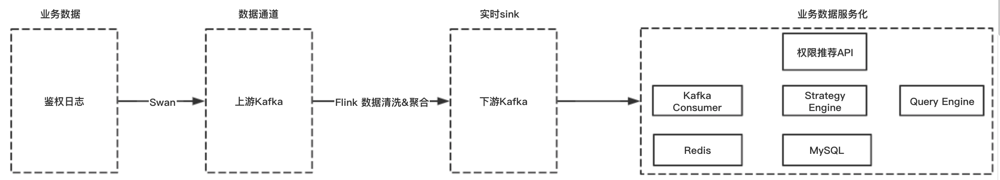

阶段总结
自从接手upm工作以来的个人总结
工程方面：
1、技术架构：dubbo + zookeeper + Spring boot
以往开发web项目使用的框架都是Spring MVC，而upm使用的是dubbo + zookeeper + Spring boot。所以也借此学习了一下这个组合架构。
先说dubbo。dubbo的作用是服务发现，也就是项目架构由之前比较传统的MVC架构变成了provider+consumer架构。这种dubbo架构将之前的Model层，也叫service层（provider）和Controller层（consumer）进行了分离。好处是进行了架构解耦，单独的service服务可以单独部署，可以同时给提供服务给多个消费者。坏处就是程序很繁琐，每次开发和部署都得启动多个工程项目、部署多个工程项目。
dubbo是一个RPC功能的组件，其主要的原理是远程调用。在service服务中定义实现的方法，可以在controller中进行直接远程调用，而不是代码执行。简单的原理解释就是provider在注册中心注册自己可以提供服务的接口，注册内容包括IP、端口、服务方法等信息，而consumer从注册中心得知自己调用的接口实现方的配置信息，从而进行远程通信。远程通信的方式则是将自己的调用接口信息传到provider，provider接收到调用的方法之后，调用本地的代码获取返回数据再以网络通信的方式返回给consumer。
这里有一个简单的demo可以参考：链接。
在上学的时候，曾经捣鼓过storm+zookeeper的架构。当时对zookeeper还不太理解其功能是什么。现在理解了。zookeeper从字面意思上理解就是动物园管理员，管理各种各样的动物。所以这个组件的功能是分布式配置、同步、命名注册服务。
上面讲述dubbo的时候提到了注册中心，zookeeper就是那个注册中心。dubbo为了可以做服务发现，需要把provider的接口注册到zookeeper中，而consumer则可以从zookeeper找到现在可用的接口。
zookeeper的特点就是可以做高可用的分布式协同。当作注册中心，需要保障注册信息的高可用性。高可用性的方式就是多台机器进行集群管理，通过节点选举算法保证集群稳定。
最后说一下Spring boot。Spring boot之前在我的印象中就是Spring MVC的简化版，易操作版。其实，它的定位就是高度封装的Spring MVC，可以快速进行项目开发和部署，迎合了现在很火的微服务。可以借助Spring boot快速搭建一个web系统，封装了相关的Spring包和web容器。所有的项目信息也都可以使用Java Config的方式进行配置。项目整体搭建、配置下来非常方便快捷。
2、异常处理
upm的异常处理使用Spring中的@ExceptionHandler统一切片处理方法中产生的异常。这里说的异常一般都是Controller层产生的异常，产生的异常可以分门别类在切片类中统一处理。这样做的好处是不用在代码中考虑异常处理问题，专注于业务逻辑。还有一个好处是所有的异常情况都可以使用异常类进行封装并抛出。
比如，之前写代码对于异常情况的处理时，记录日志，并把异常信息封装成ResponseEntity进行返回。这里的ResponseEntity包含错误码，错误信息。每次进行异常处理都会把错误码和错误信息在业务代码中进行填充，十分繁琐。并且考虑到异常及时返回的原则，只要碰到异常情况，就应该提前结束方法，使用return。如果在方法中调用了其他方法，并且在被调用的方法中出现了异常情况，这是需要单独对被调用方法的返回进行特殊处理，判断是否发生了异常，如果发生了异常则直接返回，否则进行下面的逻辑处理。
而使用了统一的异常处理之后，无论在哪个方法发生了异常情况，直接throw就完事了。
3、日志记录
日志应该分为三类：第一类是审计日志，什么人在什么时间做了什么操作，这类日志需要记录清楚操作记录；第二类是对外接口日志，哪个子系统在什么时间调用了什么接口，接口参数是什么，返回是什么。第三类是代码执行过程中异常信息记录，用于排查系统异常问题。
- 第一类日志应该入库甚至
Kafka、Hive等离线表，用于后续的用户行为分析和审查。 - 第二类日志主要记录在日志文件中，方便系统出现异常排查、监控、报警等使用，主要的作用是能够追溯到谁使用了什么功能，参数是什么，返回是什么，请求量是多少。
- 第三类日志记录在日志文件中，主要用于系统问题排查。
日志文件主要分为了两类：info信息和err信息。两类信息分类可以方便问题排查。
4、多环境项目部署
upm为了规范开发、测试、部署流程，保证线上系统的稳定，部署了多套系统。
- 国内生产环境
- 美东生产环境
- 国内预发环境
stable测试环境dev测试环境
部署不同的环境针对不同使用场景，可以保证开发的功能在dev测试环境中充分测试，在预发环境中充分验收，然后部署到生产环境。stable环境提供给公司其他团队进行对接测试。
5、Nginx
Nginx的主要两个作用是服务转发和负载均衡。
使用服务转发功能，可以将浏览器的请求转发到服务器上，获取到指定路径下的前端页面。然后把前端页面的后端服务请求转发到指定的域名或者服务器。
1 | server { |
负载均衡功能是在集群环境下，把请求流量导向到哪些机器上，以及这些机器的流量比例是多少。
1 | upstream upm_core_api { |
Nginx还有一个功能是最近刚发现的。我们都知道前端浏览器针对Ajax请求有跨域限制。想要解决跨域问题需要Nginx中配置允许跨域，这样前端页面才可以正常请求到后端数据。这种配置方式针对web服务来说没什么问题。但是有另外一种情况需要注意 —— API接口。
API接口是提供给外部单独的数据服务接口，并且有token认证机制。如果前端直接调用API接口，那么需要把认证信息加到请求参数或者Header中，势必会有泄漏token信息的风险。因此，一般API接口只提供服务端访问，不支持前端访问。做这种限制的方式就是API接口不允许跨域访问，在Nginx中就可以限制。
6、数据服务
数据服务是指把系统中的数据放入Hive、Hbase、ES等离线库中。放入这些库中主要是为了支撑一些数据分析工作，比如想要查询哪些人有哪些系统的哪些权限。如果这个功能在线上系统上会占用数据库资源，影响正常服务的提供。因此，会考虑把实时性要求不那么高的数据查询和分析工作放到大数据平台进行。
离线任务包括一些数据的清洗、提取关键信息、报表生成和数据查询。举几个例子。
- 第一次做离线任务是为了拉取
Hive表中的数据审批记录。原始Hive表中有很多数据字段，而我只需要我所关心的某几个字段，所以把数据进行清洗、字典转换等工作后存入到自己的数据库中，提供服务。 - 大数据平台还提供了数据查询服务，建立好数据查询模板，每天定时任务就可以把数据以邮件的方式发给你。
除了离线任务外，也可以做一些实时计算的工作。比如upm中的申请系统推荐功能。
用户进入系统申请权限页面后，会选择子系统进行权限申请。但是，由于子系统很多，用户可能不知道自己想要申请权限的系统名称是什么？所以这里页面就会展示用户可能想要申请的子系统名称。那这是什么做到的呢？
其实，原理很简单。
- 用户
A在申请权限之前会去想要使用的系统A进行相关工作，系统A在用户A进入页面之后会调用upm鉴权接口进行鉴权，鉴权成功允许用户A访问，鉴权失败则不允许访问。鉴权成功失败与否，在upm中都有日志记录。 - 用户
A没有权限就会去upm申请权限，这是我们认为用户A鉴权失败的子系统A就是用户想要申请权限的系统，推荐给用户A。 - 推荐问题有很强的实时性，用户
A访问完系统A之后，可能就会立即去upm申请权限。因此需要实时处理鉴权失败日志，进行数据清洗、聚合，找到用户鉴权失败的系统，并计算可能访问系统的概率。
实现方式是把鉴权日志打入Kafka，使用Flink消费日志，数据清洗、聚合之后把结果打入下游Kafka，消费下游Kafka的数据并入Redis以供推荐调用。

Flink是一个实时计算组件，需要再学习一下。
稳定性方面：
1、日志采集、metrics
日志采集是使用公司的监控平台，实时采集系统的日志并进行相关数据的计算，比如QPS、报错数等。
metrics则是系统埋点，比如记录dubbo调用service方法的时间。
2、报警策略
报警策略是在日志采集和埋点的基础上，配置策略。如果系统流量异常，短时间大量请求进来可能会压垮服务器，这是我们就可以配置一个报警策略是当QPS大于某个阈值时进行报警，运维人员查看系统状态和请求详情。
除了我们自己配置的采集之外，公司系统还有基础配置，包括机器的资源使用情况（CPU、内存、磁盘、网络等）。
3、监控
监控以图表的方式展现系统的状况
4、限流
upm中接入了很多系统，每个系统都有可能在不同时间访问upm系统。如果某一个子系统访问upm系统突然很频繁，QPS爆涨，占用了机器的全部资源。那么此时其他子系统就无法访问upm系统，upm系统就处于瘫痪状态，影响所有的子系统使用。
为了防止这种情况的发生，应该限制子系统发生大量异常请求的发起。但是我们又无法限制子系统调用方的动作，那么我们只能在upm系统上加上限流措施。限制子系统最大的流量阈值是q，超过阈值则不再处理请求直接返回。
使用限流策略，当upm系统支撑不了太大的流量时对某些子系统进行忽略，保障了大多数系统的正常使用。
5、切流
切流的动作发生的时机是当某个机房的服务发生异常，无法正常提供服务，那么就把流量切到另外一个机房。切流策略是为了止损，防止系统发生异常，服务无法提供。
切流操作的前提是服务多机房部署。多机房部署的好处是当某个机房发生断电、机器故障等问题时，可以及时把流量切到另外一个机房，提高服务的高可用性。
6、降级
一个高可用、稳定的服务系统，使用的存储组件肯定不止数据库一种，还需搭配缓存服务提高请求速度和并发度。常见的架构是Redis + Mysql的搭配。服务接口一般会从Redis中查询数据，如果Redis服务不可用或者异常较多，则从Mysql中查询数据。
这样从Redis请求数据到Mysql请求数据的过程就是一个简单的降级服务。
降级一般指的是系统在请求某个外部服务时出现异常，请求不到正常数据，就会阻塞本系统的功能。如果有重试机制或者线程阻塞，就会导致消耗大量系统资源，造成雪崩效应，整个服务不可用。因此，降级策略可以保证当上述情况发生时，就不再请求不可用服务，调用本地服务或者直接返回，不进行任何处理。由此可见，降级也是止损的一种策略。
7、服务分级解耦
传统的系统会把web接口、api接口放在一个工程项目中，统一进行部署。但是web接口和api接口的性质不同，导致可能系统只需要改一个页面小问题都需要重新部署。如果API接口的QPS很高，就有可能影响API接口提供服务，严重可能导致服务不可用。
upm的鉴权接口是特别重要、QPS很高的接口，不能容忍不可用的情况。因此，为了鉴权接口的高可用性和稳定性，把核心鉴权接口单独拎出来作为一个服务单独部署。日常系统的迭代开发不会影响核心鉴权接口，去除系统管理代码和鉴权代码的耦合。